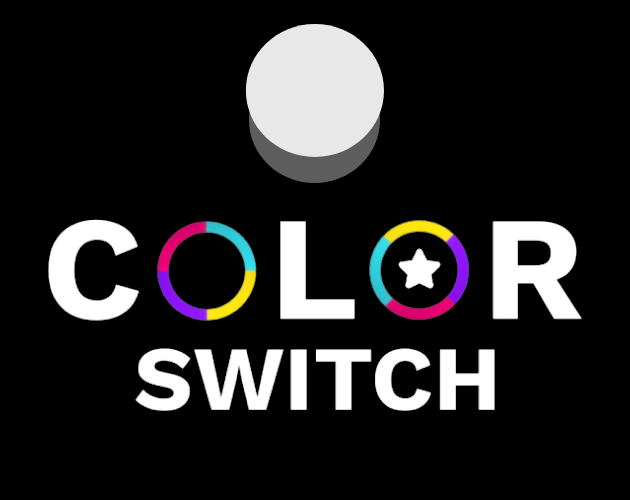
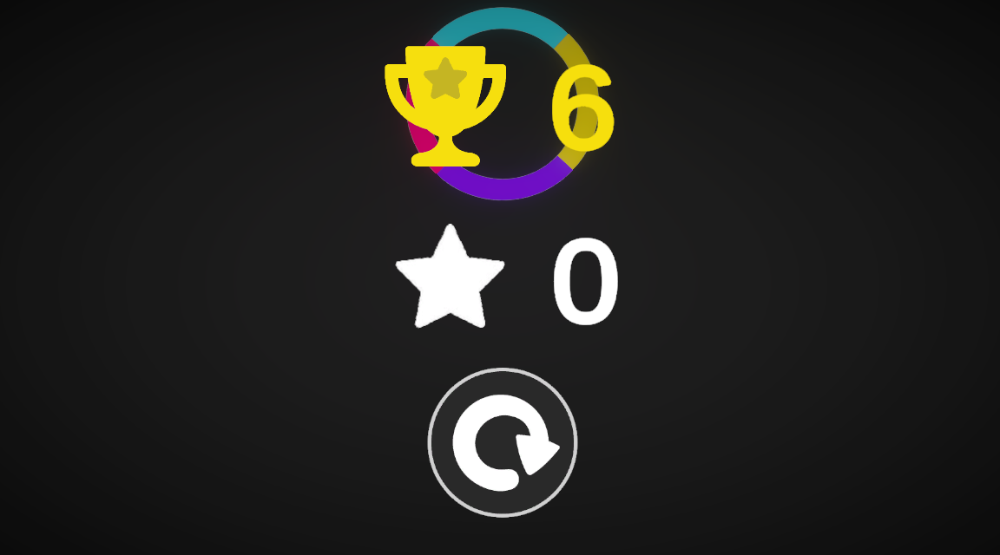
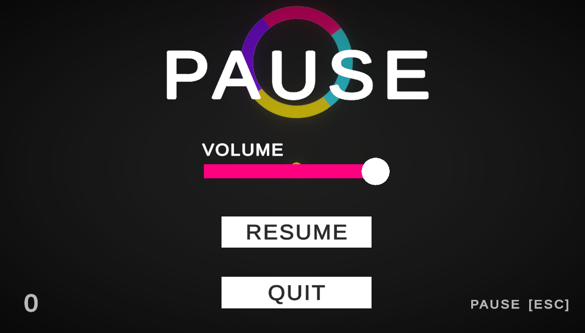
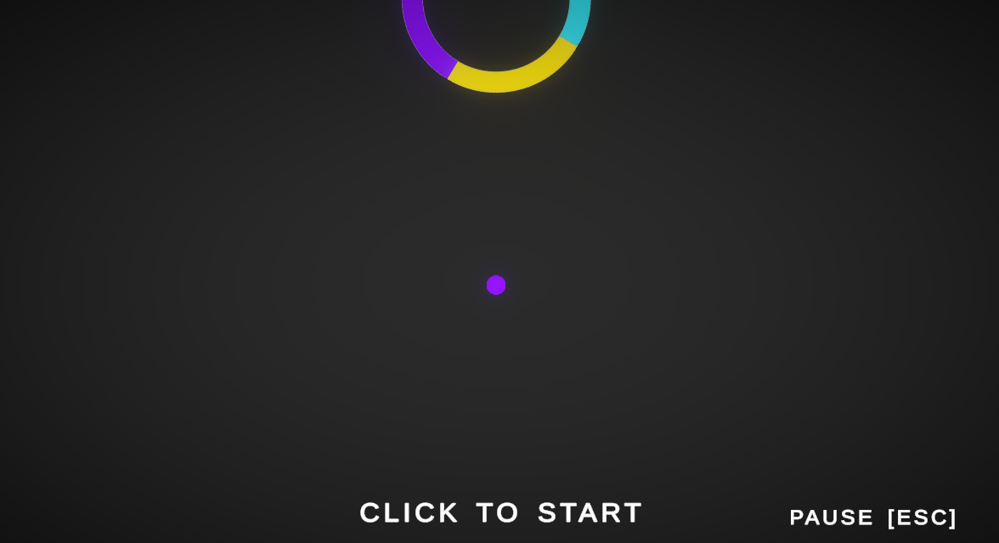

A recreation of the popular moile game Color Switch.

I made Color Switch Replica just to practice my skills, I made the game with no tutorial and I finished the whole system of the game in under 2 hours, but then it took 2 more days to polish the game for release.
I learnt a a alot from this game like "Game Juice", Switch Statements, and Procedural Generation.
The Developement side was very fun and I enjoyed seeing my friends and family try get their highscore.


